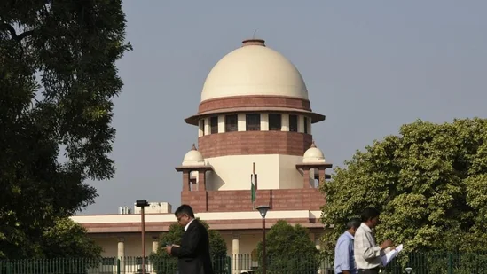

The five judges recommended to be appointed as Supreme Court judges include Justice Pankaj Mithal, Justice Sanjay Karol, Justice PV Sanjay Kumar, Justice Ahsanuddin Amanullah and Justice Manoj Misra.
The Supreme Court Collegium headed by Chief Justice of India (CJI) DY Chandrachud on Tuesday recommended the names of five high court judges for appointment as top court judges.
